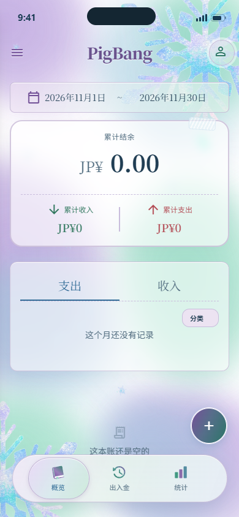
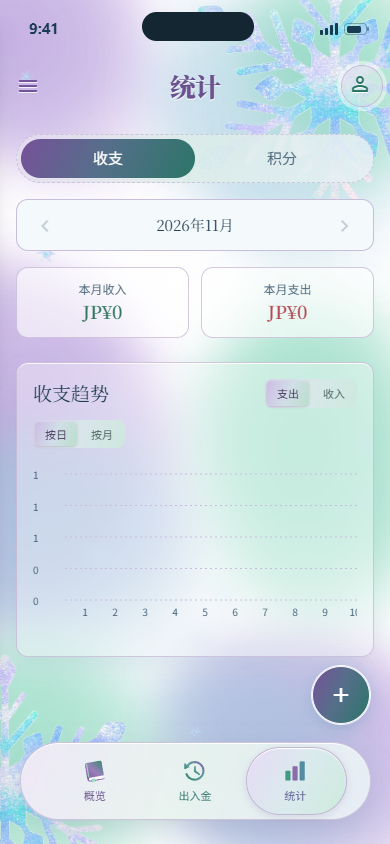

<!doctype html><html lang="zh-CN"><meta charset="utf-8"><meta name="viewport" content="width=device-width,initial-scale=1"><title>PigBang 分层珠光墨染预览</title><style>body{margin:0;padding:28px 18px 40px;background:#F8F7F9;color:#37323F;font:15px/1.6 system-ui,sans-serif}main{max-width:840px;margin:auto}h1{margin:0 0 8px;font-size:23px}p{margin:0;color:#69616F}header{margin-bottom:22px}.pages{display:grid;grid-template-columns:repeat(2,minmax(0,1fr));gap:28px}figure{margin:0}figcaption{margin-bottom:12px;font-weight:500}figure a{display:block}img{width:100%;max-width:390px;height:auto;display:block;border-radius:24px;box-shadow:0 6px 24px #0000000B}details{margin-top:24px}a{color:#735198}footer{margin-top:18px;font-size:13px;color:#69616F}@media(max-width:740px){.pages{grid-template-columns:1fr;gap:28px}figure{max-width:390px;width:100%;margin:auto}body{padding:22px 12px}}</style><main><header><h1>分层珠光墨染 · 加深混色</h1><p>紫、浅青、薄荷绿进入中间卡片；图标与切换按钮同步配色。</p></header><section class="pages"><figure><figcaption>实际首页</figcaption><a href="layered-pearl-home.png" target="_blank"></a></figure><figure><figcaption>实际统计页</figcaption><a href="layered-pearl-stats.png" target="_blank"></a></figure></section><details><summary>查看独立图层与配色文件</summary><ul><li><a href="layers/00-paper.svg" target="_blank">底纸</a> · 透明度 100%</li><li><a href="layers/10-lavender-ink.svg" target="_blank">淡紫墨染</a> · 透明度 88%</li><li><a href="layers/20-cyan-ink.svg" target="_blank">浅青墨染</a> · 透明度 66%</li><li><a href="layers/30-mint-ink.svg" target="_blank">薄荷绿墨染</a> · 透明度 81%</li><li><a href="layers/40-pearl-snowflake.png" target="_blank">珠光雪花原图抠背景版</a></li><li><a href="composition.json" target="_blank">组合清单：层级、位置、透明度</a></li><li><a href="palette.json" target="_blank">颜色参数</a></li><li><a href="styles/icon-palette.css" target="_blank">图标与按钮配色</a></li><li><a href="icons/book.svg" target="_blank">书本图标</a> · <a href="icons/history.svg" target="_blank">明细图标</a> · <a href="icons/bar_chart.svg" target="_blank">统计图标</a></li></ul></details><footer>空账本预览；布局、字体和图表结构未变。状态栏和安全区为展示模拟。</footer></main></html>